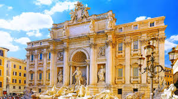
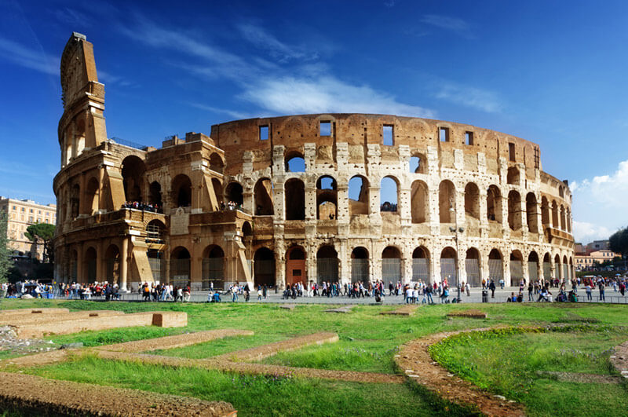
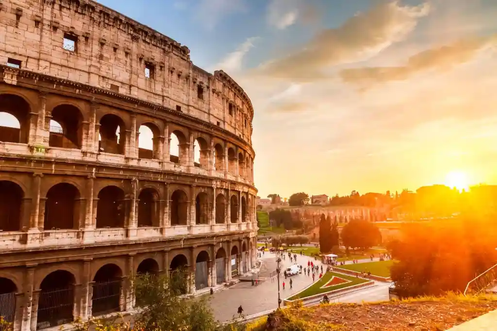
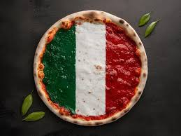
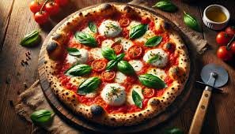

ITALIA🇮🇹
"იტალია"მდებარეობს საპარლამენტო რესპუბლიკაში სამხრეთ ევროპაში. იგი მოიცავს სხვა მრავალ პატარა კუნძულს. იტალიის საზღვრებში მდებარეობს ორი ანკლავი, დამოუკიდებელი სახელმწიფოები სან-მარინო და ვატიკანი. ამავე დროს, . იტალიის ტერიტორია მოიცავს 301 338 კმ²-ს. 60,6 მლნ მცხოვრებით იტალია ევროპაში მე-5 სახელმწიფოა მოსახლეობის რაოდენობის მხრივ და მსოფლიოში 23-ე.

კოლოსეუმი ერთ-ერთი ყველაზე ცნობილი ღირსშესანიშნაობაა აპენინის ნახევარკუნძულზე. ანტიკური ეპოქის მონუმენტური ნაგებობა რომის ისტორიულ ცენტრში, "მარადიული ქალაქის" შუაგულში მდებარეობს. გაგაოცებთ მისი დიდებულება და ძლიერი ენერგეტიკა, მოგნუსხავთ და სურვილს გაგიჩენთ, ხელით შეეხოთ ტრავერტინის მასიურ კედლებს. სახელწოდება კოლოსეუმი (კოლისეუმი) მოდის ლათინური სიტყვიდან "colosseus", რაც უზარმაზარს ნიშნავს. ასე მიიჩნევდნენ მას რომაელები ჩვენი წელთაღრიცხვის გარიჟრაჟზე, როდესაც შენობების უმრავლესობის სიმაღლე ათ მეტრს არ აღემატებოდა.


იტალიური კერძები🍝🍕


იტალიაში ერთ-ერთი ყველაზე ცნობილი კერძი არის პიცა!🍕რომელიც წარმოადგენს ბრტყელ გამომცხვარ პურს, რომელიც ჩვეულებრივ, დაფარულია ტომატის საწებლით, ყველით (მოცარელათი) და სხვადასხვა მასალით. პიცა წარმოადგენს იტალიური, კერძოდ, ნეაპოლიტანური სამზარეულოს
